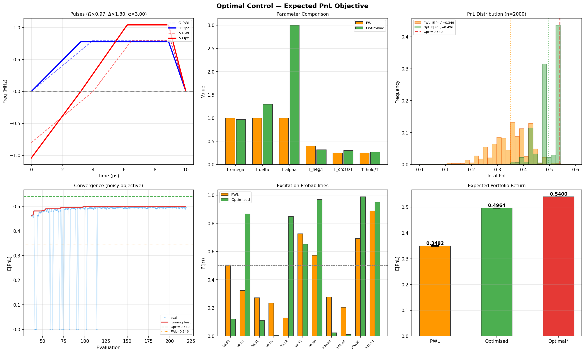

Physics Ansatz + Nelder-Mead 直接优化期望 PnL · Bloqade 0.34.0 · Monte Carlo 采样驱动
做市商 (Market Maker) 在订单簿的多个价格档位挂出买卖报价以捕获价差收益。核心约束：任意两个活跃报价之间的价格间距不能小于 $\dmin = 0.30$，否则同侧报价互相蚕食流动性。每个价格档位有一个预期盈利权重 $v_i$，目标是在满足间距约束下最大化总预期收益 (PnL)。
这等价于图论中的加权最大独立集 (MWIS) 问题：顶点 = 价格档位，边 = 间距不足的档位对，目标 = 最大权重独立集。
每个价格档位对应一个 87Rb 原子，囚禁在光镊中形成一维链。原子的内部状态直接编码决策变量：
采用线性缩放因子 30 µm/价格单位 将非均匀价格网格映射到物理空间。这一映射的巧妙之处在于：非均匀的价格间距在物理空间中保留了其相对比例，使得 Rydberg 相互作用强度自动区分"必须分离"的档位对和"可以共存"的档位对。
Rydberg 系统的演化由以下哈密顿量驱动：
其中 $\Omega(t)$ 是 Rabi 频率（驱动原子在 $|g\rangle$ 和 $|r\rangle$ 之间相干演化），$V_{ij} = \Csix/r_{ij}^6$ 是 vdW 相互作用（阻塞惩罚），而 $\Delta_i(t)$ 是每个原子的局部失谐——权重信息的编码通道。
采用加法式 (additive) 编码：
| 阶段 | 时长 (µs) | $\Omega(t)$ | $\Delta_0(t)$（全局） | $s(t)$（包络） | 物理意义 |
|---|---|---|---|---|---|
| 负失谐 | 4.0 → 3.2 | 0 → $\Omega_{\mathrm{max}}$ | $-\Delta_{\mathrm{amp}}$ → 0 | 0 → 0 | 所有原子均匀初始化为 $|g\rangle$ |
| 过零 | 2.5 → 3.0 | $\Omega_{\mathrm{max}}$（保持） | 0 → $+\Delta_{\mathrm{amp}}$ | 0 → 1 | 全局激发 + 权重分裂逐步打开 |
| 正失谐保持 | 2.5 → 2.68 | $\Omega_{\mathrm{max}}$（保持） | $+\Delta_{\mathrm{amp}}$（保持） | 1 → 1 | 权重差异最大化，系统收敛 |
| 下降 | 1.0 → 1.12 | $\Omega_{\mathrm{max}}$ → 0 | $+\Delta_{\mathrm{amp}}$（保持） | 1 → 1 | Rabi 缓降，冻结最终态 |
表中数值分别对应 PWL 基线参数和优化后参数（详见第 04 节）。权重-失谐耦合强度 $\alpha$ 是区分"硬约束"与"软权衡"的关键：$\alpha \cdot v_{\mathrm{max}} / \Delta_{\mathrm{amp}} \approx 0.49$（PWL）意味着权重偏置约为全局斜坡的一半，系统面临真正的优化权衡——紧簇中阻塞占主导，中等间距中高权重可以克服阻塞惩罚，宽间距中权重自由决定。
| 原子 idx | 价格 | 权重 $v_i$ | 位置 (µm) | 与前一原子间距 (µm) | 间距 (价格单位) |
|---|---|---|---|---|---|
| 0 | 98.50 | 0.04 | 0.0 | — | — |
| 1 | 98.62 | 0.11 | 3.6 | 3.6 | 0.12 |
| 2 | 98.91 | 0.08 | 12.3 | 8.7 | 0.29 |
| 3 | 99.05 | 0.03 | 16.5 | 4.2 | 0.14 |
| 4 | 99.12 | 0.12 | 18.6 | 2.1 | 0.07 ⚠ |
| 5 | 99.45 | 0.06 | 28.5 | 9.9 | 0.33 |
| 6 | 99.90 | 0.09 | 42.0 | 13.5 | 0.45 |
| 7 | 100.02 | 0.05 | 45.6 | 3.6 | 0.12 |
| 8 | 100.40 | 0.10 | 57.0 | 11.4 | 0.38 |
| 9 | 100.55 | 0.13 | 61.5 | 4.5 | 0.15 |
| 10 | 101.10 | 0.03 | 78.0 | 16.5 | 0.55 |
实际订单簿的价格分布是非均匀的——某些区域报价密集（流动性聚集），某些区域稀疏。本模拟刻意构建了一个包含极端异质性的订单簿，以充分展示 Rydberg 物理的核心优势。
| 原子对 | 价格差 | 物理间距 (µm) | $V_{ij}$ (rad/µs) | $V/\Omega_{\mathrm{max}}$ | 阻塞区制 |
|---|---|---|---|---|---|
| atom0–atom1 | 0.12 | 3.6 | 2,490 | 495.4 | HARD BLOCK |
| atom1–atom2 | 0.29 | 8.7 | 12.5 | 2.49 | strong |
| atom2–atom3 | 0.14 | 4.2 | 988 | 196.5 | HARD BLOCK |
| atom3–atom4 | 0.07 | 2.1 | 63,200 | 12,573 | HARD BLOCK |
| atom4–atom5 | 0.33 | 9.9 | 5.8 | 1.15 | moderate |
| atom5–atom6 | 0.45 | 13.5 | 0.9 | 0.18 | weak |
| atom6–atom7 | 0.12 | 3.6 | 2,490 | 495.4 | HARD BLOCK |
| atom7–atom8 | 0.38 | 11.4 | 2.5 | 0.49 | weak |
| atom8–atom9 | 0.15 | 4.5 | 653 | 129.9 | HARD BLOCK |
| atom9–atom10 | 0.55 | 16.5 | 0.3 | 0.05 | free |
值得注意的是，约束边中存在一条非最近邻边 (a2–a4, |ΔP|=0.21)，这是由于非均匀价格间距导致的一维链特例。非均匀权重打破了平移对称性，使解空间远离平凡的 "r-g-r-g" 交替模式，赋予了问题非平凡的优化难度。
模拟量子演化由两个时变波形控制：Rabi 频率 $\Omega(t)$（驱动原子在基态和 Rydberg 态之间相干演化）和局部失谐 $\Delta_i(t)$（通过能级偏置编码权重信息）。波形的形状决定了量子系统最终以怎样的概率分布输出不同的 bitstring。
将 $\Omega(t)$ 和 $\Delta_i(t)$ 的波形参数化为 6 个可调变量，保持分段线性结构但允许幅度和时间分配自由变化：
| 参数 | 物理含义 | 范围 | PWL 值 | 优化后 | 变化 |
|---|---|---|---|---|---|
| $f_\omega$ | $\Omega_{\mathrm{max}}$ 缩放 | [0.3, 1.5] | 1.000 | 0.972 | −2.8% |
| $f_\alpha$ | 权重-失谐耦合强度 | [0.3, 3.0] | 1.000 | 3.000 | +200% |
| $f_\delta$ | $\Delta_{\mathrm{amp}}$ 缩放 | [0.3, 1.5] | 1.000 | 1.300 | +30.0% |
| $T_{\mathrm{neg}}/T$ | 负失谐初始化占比 | [0.2, 0.6] | 0.400 | 0.320 | −20.0% |
| $T_{\mathrm{cross}}/T$ | 过零斜坡占比 | [0.1, 0.4] | 0.250 | 0.300 | +20.0% |
| $T_{\mathrm{hold}}/T$ | 正失谐保持占比 | [0.1, 0.4] | 0.250 | 0.268 | +7.2% |
E[PnL] 目标的关键挑战是 Monte Carlo 噪声（标准误差 $\approx \sigma_{\mathrm{PnL}} / \sqrt{N_{\mathrm{shots}}}$）。采用四重对策：
| bitstring | PnL | count | freq |
|---|---|---|---|
| 10100110011 | 0.4300 | 117 | 5.85% |
| 01000110011 | 0.4200 | 93 | 4.65% |
| 10000110011 | 0.3500 | 91 | 4.55% |
| 10100101011 | 0.3900 | 76 | 3.80% |
| 10000101011 | 0.3100 | 59 | 2.95% |
| … 230 more unique bitstrings … | |||
| 01001110011 ★ | 0.5400 | 3 | 0.15% |
| bitstring | PnL | count | freq |
|---|---|---|---|
| 01001110011 ★ | 0.5400 | 904 | 45.20% |
| 01001010011 | 0.4800 | 614 | 30.70% |
| 10100110011 | 0.4300 | 181 | 9.05% |
| 01001110010 | 0.5100 | 48 | 2.40% |
| 01000110011 | 0.4200 | 47 | 2.35% |
| … 31 more unique bitstrings … | |||
